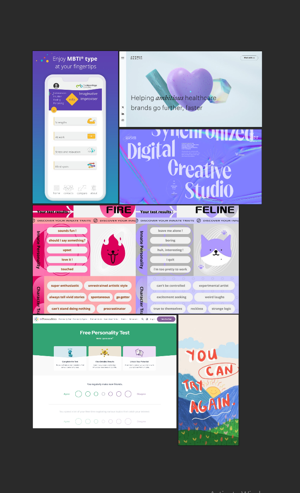

A collaboration group project on creating a gamified ADHD app to be accessible across New Zealand’s primary healthcare
Tools: Figma & Adobe AE
Target Audience: 18-25
(University Students)
My role in the team: designing the prototype app
The idea behind this: Coming from personal experience, ADHD people tend to strive in Chaos but to them they feel like they are organized enough. The idea behind this: Coming from personal experience, ADHD people tend to strive in Chaos but to them they feel like they are organized enough. In society's view, it's messy and often doesn't make sense. My mood board symbolizes what goes on inside an ADHD brain (though not all with ADHD may relate). We love colorful, shiny things, but we also love moody vibes. Abstract art resonates deeply with me, especially when I see shapes or lines.
Visualboard Inspo
Background Visual inspo for app background system.
For the User Journey, we decide to use the path of advertisement from social media and walking around the city and they sees a Hyperia poster. Hyperia is the name of our ADHD app name, it is derives from hyperactive (one of ADHD types) and we want to build a world within the app, therefore it is called Hyperia. From user journey, I moved on to making the prototypes, on the above is the very early stage to how i end up able to create the end results of it. I stop mid-way before creating the Hi-Fi as i need feedback from multiple different users to test out the prototype.
User 1
User 2
left / right slider (make it more feasible.) add indicator to swipe left and right. pretty coherent
Cute Design but pretty confusing, but after times it is quite easy to navigate.
User 3: During Result screen, add fun fact. (instead of adding a reason to improve or what can you do about it?)
the community forum is very beneficial as well. It helped the user be able wanting to contribute to the greater cause on helping other ADHD's that struggles.
ADHD isn't a bad thing, and you shouldn't feel different from those without ADHD.